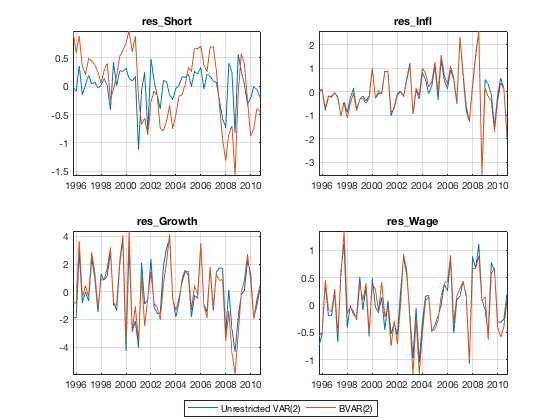
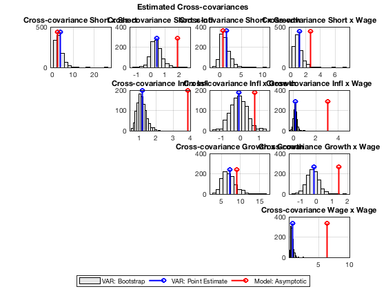
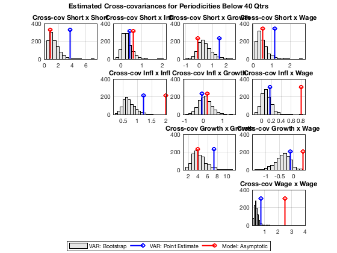
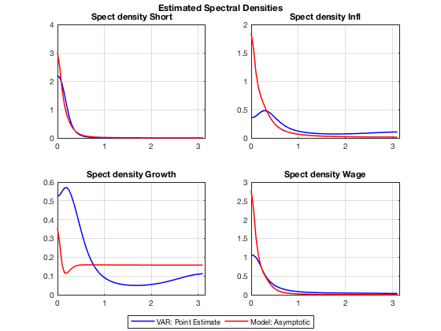

Compare Second Moment Properties in Model and Data
Compute and compare several second-moment properties of the estimated model and the data. Describe the data using an estimated VAR; this also allows to evaluate sampling uncertainty of the empirical estimates using bootstrap methods.
Contents
- Dependencies
- Clear Workspace
- Load Estimated Model Object, and Historical Database
- Estimate VAR and BVAR
- Compare Transition Matrices
- Compare Residuals
- Resample From Estimated VAR
- Compare ACF From Model and Data
- Compare Frequency Selective ACF
- Compare VAR and Model Spectra
- Show Variables and Objects Created in This File
Dependencies
Run the following m-files before this one:
Clear Workspace
Clear workspace, close all graphics figures, clear command window, and check the IRIS version.
clear close all clc irisrequired 20180131
Load Estimated Model Object, and Historical Database
Load the model object estimated in estimate_params, and the historical database created in read_data.
load mat/estimate_params.mat mest load mat/read_data.mat d startHist endHist
Estimate VAR and BVAR
Estimate an unrestricted 2nd-order VAR, and a 2nd-order Bayesian VAR with Litterman-type priors. First, create an empty VAR object specifying the names of the endogenous variables. The names are identical to the names of measurement variables in the DSGE model. Second, call the function estimate( ) with an input database. For bayesian VARs, create prior dummy observations before running estimate( ).
ylist = get(mest, 'YList'); %(#ylist) p = 2; v = VAR(ylist) %#ok<NOPTS> %(#emptyvar) [v, vdata] = estimate(v, d, startHist:endHist, 'Order=', p); v %#ok<NOPTS> X = BVAR.litterman(0, sqrt(30), 0) %#ok<NOPTS> %(#priordummy) bv = VAR(ylist) %#ok<NOPTS> [bv, bvdata] = estimate(bv, d, startHist:endHist, 'Order=', p, ... 'BVAR=', X, 'Stdize=', true); bv %#ok<NOPTS>
v =
empty VAR object
endogenous: [4] 'Short' 'Infl' 'Growth' 'Wage'
exogenous: [0]
conditioning: [0]
groups: implicit
comment: ''
user data: empty
v =
VAR(2) object: [1 parameter variant(s)]
endogenous: [4] 'Short' 'Infl' 'Growth' 'Wage'
exogenous: [0]
conditioning: [0]
groups: implicit
comment: ''
user data: empty
X =
bvarobj with properties:
name: 'litterman'
y0: @litterman/y0
y1: @litterman/y1
k0: @litterman/k0
g1: @litterman/g1
bv =
empty VAR object
endogenous: [4] 'Short' 'Infl' 'Growth' 'Wage'
exogenous: [0]
conditioning: [0]
groups: implicit
comment: ''
user data: empty
bv =
VAR(2) object: [1 parameter variant(s)]
endogenous: [4] 'Short' 'Infl' 'Growth' 'Wage'
exogenous: [0]
conditioning: [0]
groups: implicit
comment: ''
user data: empty
Compare Transition Matrices
Get and print the transition matrices from the plain VAR and the BVAR objects. The transition matrices are Ny-by-Ny-by-P matrices, where Ny is the number of variables, and P is the order of the VAR.
A = get(v, 'A*'); BA = get(bv, 'A*'); disp('Unrestricted VAR transition matrix'); A(:, :, 1) A(:, :, 2) disp('BVAR transition matrix'); BA(:, :, 1) BA(:, :, 2)
Unrestricted VAR transition matrix
ans =
1.5407 -0.0653 0.0334 0.0759
-0.0501 0.3143 0.0641 -0.1158
1.6851 -0.3895 0.0969 -1.0528
0.2922 -0.0748 -0.0505 0.3510
ans =
-0.5799 0.0513 -0.0048 -0.1275
0.0950 0.2476 0.0344 -0.1642
-0.8984 -0.3549 0.1728 -0.8460
-0.0739 0.1175 0.0473 -0.0704
BVAR transition matrix
ans =
0.3343 0.0721 0.1029 0.2844
0.0191 0.2178 0.0421 -0.0576
0.2147 -0.1388 0.1927 -0.4495
0.0882 0.0086 -0.0114 0.2253
ans =
0.2589 0.0683 0.0710 0.1545
0.0089 0.1812 0.0341 -0.1151
0.1136 -0.2504 0.1935 -0.4159
0.0778 0.0724 0.0336 0.0733
Compare Residuals
Plot and compare the estimated residuals from the plain VAR and the BVAR. Use the output data, vdata and bvdata returned from estimate( ). These databases containing both the endogenous variables and estimated residuals. By default, the residuals are named res_XXX where XXX is the name of the respective variable,
elist = get(v, 'EList'); figure( ); for i = 1 : 4 name = elist{i}; subplot(2, 2, i); plot(vdata.(name)); hold all; plot(bvdata.(name)); title(name, 'Interpreter', 'None'); grid on; axis tight; end grfun.bottomlegend('Unrestricted VAR(2)', 'BVAR(2)');
Resample From Estimated VAR
Use a wild bootstrap to generate N=500 of VARs; a wild bootstrap is robust to potential heteroscedasticity of residuals. Note that some of the resampled VAR parameterisations may be explosive, and remove them from the VAR object.
N = 1000; Y = resample(v, vdata, Inf, N, 'Wild=', true, 'Progress=', true); size(Y) Nv = VAR(ylist); Nv = estimate(Nv, Y, Inf, 'Order=', p); inx = isstationary(Nv); sum(inx) Nv = Nv(inx);
[--IRIS VAR.resample progress------------]
[****************************************]
ans =
1 1
ans =
999
Compare ACF From Model and Data
Compute and plot the autocovariance/autocorrelation functions (ACF) for the estimated VAR, the resampled VARs, and the model. The function helper_plot_acf( ) is a helper function (for plotting ACFs) created for this exercise in this tutorial (it is not part of the IRIS toolbox).
[Cv, Rv] = acf(v, 'Order=', 1); [CNv, RNv] = acf(Nv, 'Order=', 1); [Cm, Rm] = acf(mest, 'Order=', 1, 'Select=', ylist); figure( ); for i = 1 : length(ylist) for j = i : length(ylist) subplot(4, 4, (i-1)*4+j); helper_plot_acf(CNv(i, j, 1, :), Cv(i, j, 1), Cm(i, j, 1)); %(#helper_plot_acf) title(sprintf('Cross-covariance %s x %s', ylist{i}, ylist{j})); end end grfun.bottomlegend( ... 'VAR: Bootstrap', 'VAR: Point Estimate', 'Model: Asymptotic'); grfun.ftitle('Estimated Cross-covariances');
Compare Frequency Selective ACF
Use the option Filter= to compute the ACF (both from the strucural model and the VAR) that corresponds to cyclical fluctuations with periodicity between 4 and 40 quarters (1 to 10 years).
[Cv1, Rv1] = acf(v, 'Order=', 1, 'Filter=', 'Per<=40 & per>4'); [Cv2, Rv2] = acf(v, 'Order=', 1, 'Filter=', 'Per>40'); [Cv3, Rv3] = acf(v, 'Order=', 1, 'Filter=', 'Per<=4'); maxabs(Cv1+Cv2+Cv3 - Cv) [CNv1, RNv1] = acf(Nv, 'Filter=', 'Per<=40 & per>4', 'Progress=', true); [Cm1, Rm1] = acf(mest, 'Filter=', 'Per<=40 & per>4', 'Select=', ylist); figure( ); for i = 1 : length(ylist) for j = i : length(ylist) subplot(4, 4, (i-1)*4+j); helper_plot_acf(CNv1(i, j, 1, :), Cv(i, j, 1), Cm1(i, j, 1)); title(sprintf('Cross-cov %s x %s', ylist{i}, ylist{j})); end end grfun.bottomlegend( ... 'VAR: Bootstrap', 'VAR: Point Estimate', 'Model: Asymptotic'); grfun.ftitle( ... 'Estimated Cross-covariances for Periodicities Below 40 Qtrs');
ans = 2.2204e-14 [--IRIS VAR.acf progress-----------------] [****************************************]
Compare VAR and Model Spectra
Compute and plot the power spectra and spectral densities for the estimated VAR and for the model. The function helper_plot_xsf( ) is a helper function (for plotting the spectral densities) created for this exercise in this tutorial (it is not part of the IRIS toolbox); it can be opened and viewed in the Matlab editor.
freq = 0 : 0.05 : pi; [Pv, Sv] = xsf(v, freq); [Pm, Sm] = xsf(mest, freq, 'Select=', ylist); figure( ); for i = 1 : length(ylist) subplot(2, 2, i); helper_plot_xsf(freq, Sv(i, i, :), Sm(i, i, :)); title(sprintf('Spect density %s', ylist{i})); end grfun.bottomlegend('VAR: Point Estimate', 'Model: Asymptotic'); grfun.ftitle('Estimated Spectral Densities');
Show Variables and Objects Created in This File
whos
Name Size Bytes Class Attributes A 4x4x2 256 double BA 4x4x2 256 double CNv 4x4x2x999 256716 namedmat CNv1 4x4x1x999 128844 namedmat Cm 4x4x2 1228 namedmat Cm1 4x4 1100 namedmat Cv 4x4x2 1228 namedmat Cv1 4x4x2 1228 namedmat Cv2 4x4x2 1228 namedmat Cv3 4x4x2 1228 namedmat N 1x1 8 double Nv 1x1 1654431 VAR Pm 4x4x63 17100 namedmat Pv 4x4x63 16128 double complex RNv 4x4x2x999 256716 namedmat RNv1 4x4x1x999 128844 namedmat Rm 4x4x2 1228 namedmat Rm1 4x4 1100 namedmat Rv 4x4x2 1228 namedmat Rv1 4x4x2 1228 namedmat Rv2 4x4x2 1228 namedmat Rv3 4x4x2 1228 namedmat Sm 4x4x63 17100 namedmat Sv 4x4x63 16128 double complex X 1x1 146 BVAR.bvarobj Y 1x1 4973920 struct ans 1x1 120 cell bv 1x1 2733 VAR bvdata 1x1 6892 struct d 1x1 15480 struct elist 1x4 518 cell endHist 1x1 8 DateWrapper freq 1x63 504 double i 1x1 8 double inx 1x1000 1000 logical j 1x1 8 double mest 1x1 90932 model name 1x8 16 char p 1x1 8 double startHist 1x1 8 DateWrapper v 1x1 2733 VAR vdata 1x1 6892 struct ylist 1x4 486 cell